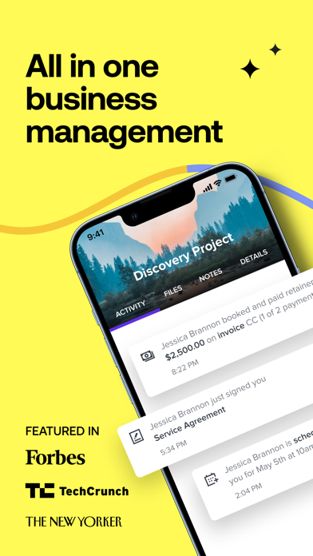
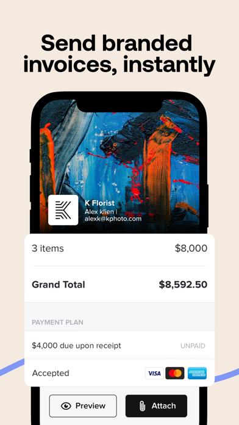

What if HoneyBook's AI cues ended in one reliable mobile rescue flow?
HoneyBook is already shipping AI follow-ups, Gmail suggestions, AI note-taking, and priority guidance. The gap is execution: public flows still spread rescue work across Contacts, Projects, notifications, and Gmail-linked cues while recent reviews keep calling out slow screens, broken sends, file-edit gaps, and tablet fallback.
HoneyBook is adding more intelligence while users still feel friction in the last tap.
The official help flow for AI follow-up suggestions is useful, but it assumes the operator knows where to look. That is a desktop-shaped mental model. On mobile, the rescue moment needs to be obvious, fast, and reliable enough for premium workflow software.
HoneyBook documents rescue work through Contacts filters, Projects filters, scheduled notifications, and Gmail-linked suggestions. The signal exists, but not in one operational home.
Recent reviews still mention missing file edits, contract friction, slow transitions, invoice glitches, and cases where the browser is easier than the app for important work.
Public Reddit threads show price sensitivity rising. That means each slow or brittle mobile moment is easier to convert into a switching conversation.
Replace scattered rescue work with one mobile Rescue Queue.
The idea is narrow on purpose. Do not redesign all of HoneyBook. Just pull the rescue moment into a single mobile surface that explains why the lead surfaced, previews the draft, and lets the user send, convert, remind, or assign without leaving the screen.


High-intent lead stalled after pricing review. Best next move: concise follow-up with one approval shortcut and a clear next step.
Edit before send. Keep tone human. Preserve the context that made this rescue worth surfacing in the first place.
After send, attach the right next step, mark the lead rescued, and keep project state aligned without jumping to another menu.
Instead of letting this cool off in a different menu, let the operator follow up and attach the right automation while the deal still feels warm.
This concept is anchored in HoneyBook's roadmap language and recent user friction.
The goal is not to invent a new category for HoneyBook. It is to make already-public AI and recovery features easier to use on the device where execution currently feels weakest.
Public product updates call out AI follow-ups, Gmail suggestions, priority lists, and business snapshots. The direction is set. The opportunity is tightening the mobile completion loop around it.
Recent iOS and Android reviews mention clunky navigation, crashes, invoice issues, desktop fallback for contract work, and critical actions that do not feel reliable enough on the move.
Reddit discussions around HoneyBook alternatives, fees, and cluttered workflows suggest polished branding is not enough. The product needs to feel fast and decisive when revenue is on the line.
A believable product slice, not a full-platform redesign.
This is a good CEO-level product pitch because the scope can stay contained while still producing a visible user win and a measurable retention story.
HoneyBook already has the AI signals. The opportunity is making the last tap reliable.
Elinext can help product teams turn AI suggestions into mobile-native actions that feel faster, safer, and easier to trust. This prototype stays narrow on purpose because that is usually how meaningful mobile wins actually ship.